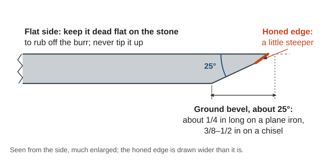
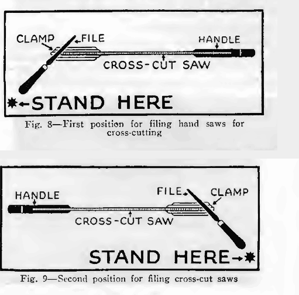
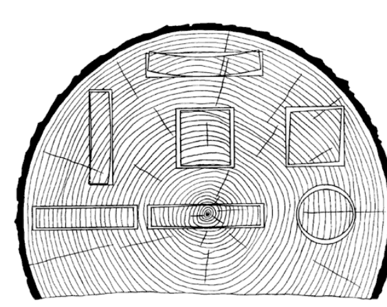
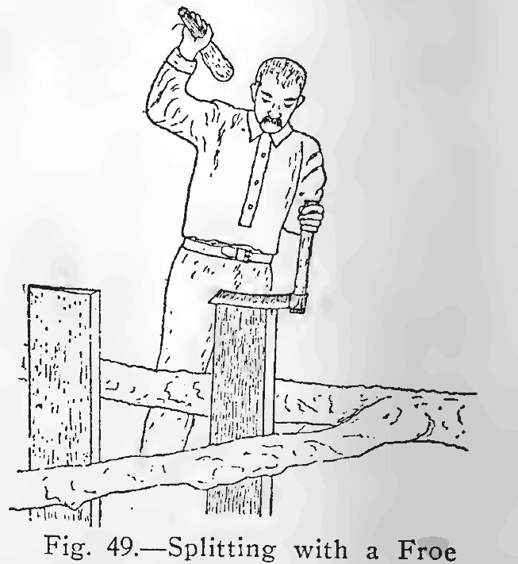
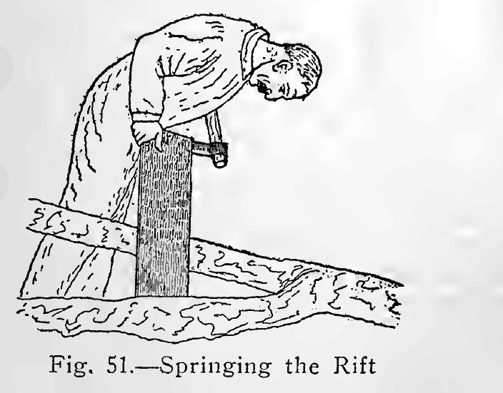
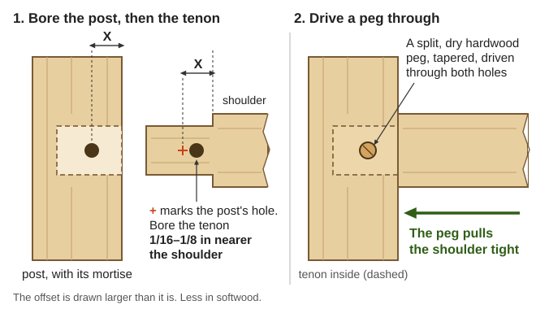
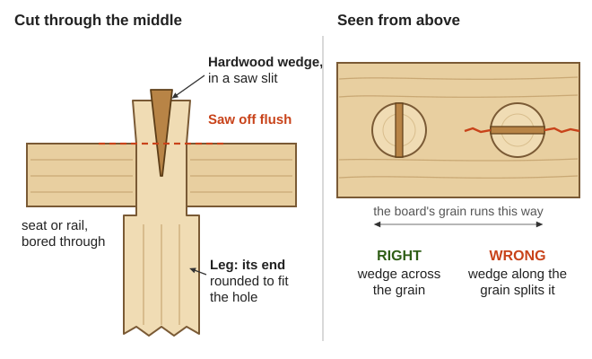
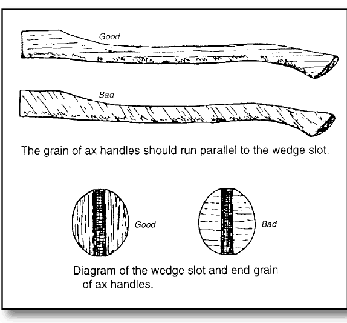
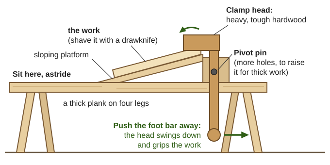

Guides › Making & repair · Emergency · Index A–Z
How to make and mend useful things from wood with no power tools: the tools to keep and how to sharpen them, which wood to use and how to dry it, splitting green wood, sawing and planing true, the joints (including ones that need no glue or nails), tool handles, a bench, stools, shelves, a ladder, and repairs to doors and furniture. The woodworking books are in Southern-Oregon\Blacksmithing-Tools\Hand-Tools (Griffith's Essentials of Woodworking, Brace and Mayne's Farm Shop Work, the Disston saw book, Handtools for Trail Work); the USDA Wood Handbook is in Southern-Oregon\Shelter-Building\Carpentry-Timber; old shop recipes are in Southern-Oregon\Homestead-Skills\Household-Make-Do; the Army's Carpentry (FM 5-426) and Use and Care of Hand Tools (TM 9-243) are in Manuals\ArmyFieldManuals.
The short version
- Sharp tools are safe tools: "Dull tools are useless and dangerous" (Handtools, p. 49). Grind chisels and plane irons at about 25°, hone a little steeper (Griffith, p. 69).
- Both hands behind the edge, and clamp the work (Griffith, pp. 61–62). The drawknife comes toward you: "keep fingers clear of blade corners" (Handtools, p. 45).
- Crosscut saws are filed at an angle, rip saws straight across. Joint and set before you file (Disston, pp. 35–39).
- Split, don't saw, anything that must be strong — handles, pegs, rungs (Griffith, p. 100). Hickory for striking tools, ash for the rest (Handtools, p. 53).
- Wood moves with water: most along the growth rings, half that across them, hardly at all along its length (Wood Handbook, p. 84). Rough it out green, finish it dry (rule of thumb).
- Joints with no glue or nails: a pegged (drawbored) mortise and tenon, or a tenon wedged through a hole (FM 5-426, p. 206; Brace & Mayne, p. 42). Hide glue fails in the damp (Brace & Mayne, p. 204).
- Oily rags can catch fire by themselves (An Ax to Grind, p. 34). Never burn pressure-treated wood or make food boards from it (Wood Handbook, p. 329).
Besides the tools below, a 1912 farm list names a gouge, a hatchet, files, a vise, a shaving horse and a grindstone (Handy Farm Devices, pp. 13–14).
| Tool | What to know |
|---|---|
| Crosscut and rip saws | Crosscut teeth are pointed like knives; rip teeth are little chisels (Griffith, p. 31). 8 points to the inch is the all-round crosscut, 5½ the usual rip (Disston, p. 9) |
| Jack plane, jointer, smooth plane | The jack (about 13 in) takes wood off; the jointer (2 ft or more) straightens long edges; the smoother finishes (Griffith, pp. 39–41) |
| Chisels | Paring chisels are pushed by hand, "never" struck; framing chisels take the mallet (Brace & Mayne, pp. 183–184) |
| Brace and auger bits | The number on the tang is sixteenths of an inch: 8 bores 1/2 in (Griffith, p. 55) |
| Drawknife, spokeshave | Shaping handles, rungs and curves; the spokeshave is "a small plane" (Brace & Mayne, p. 184) |
| Square, gauge, knife | Laying out (see Measuring, sawing and planing) |
| Scraper | Saw steel with a turned edge, for curly grain a plane tears (Griffith, p. 79) |
Make these yourself: clamps from a bar, two blocks and a pair of wedges (Griffith, pp. 90–91; drawing); a bench hook, which doubles as a shooting board for planing ends square (Griffith, p. 51); two winding sticks for checking twist (p. 46); and a hardwood mallet (rule of thumb).
📚 Go deeper: Griffith Essentials of Woodworking — every hand tool and how to use it, with drawings; Brace and Mayne Farm Shop Work — the tools, then farm projects; TM 9-243 — care of every common hand tool. Pictures: Hand plane, Brace (tool), Spokeshave.
The grindstone shapes; only the oilstone sharpens. "No tool, after it has been ground, is ready for use until it has been whetted" (Griffith, p. 68). Grind only when the edge is rounded or nicked; otherwise just hone.

The ground bevel, the steeper honed edge, and the flat side that stays flat (a diagram drawn for this guide).Plane irons are ground straight across with the corners just rounded; gouges are rolled on the stone and the inside burr taken off with a shaped slip (Griffith, pp. 70–71). Keep a drawknife at 33° (Handtools, p. 45). A scraper is filed square, honed, then its edge turned over with a burnisher (any smooth hard steel) under light pressure (Griffith, pp. 80–81; drawing).
Stones: use a little light oil and the whole stone, or it wears hollow. Flatten a worn stone on sandpaper on a flat surface, or on a board with sand and water (Griffith, pp. 68–69; Brace & Mayne, p. 211); clean a glazed one with kerosene, or citrus solvent and a stiff brush (Handtools, p. 52). A glazed grindstone cuts again with a little sand poured on (Handy Farm Devices, p. 15).
Axes, hoes and shovels, and forging new chisels and plane irons from old files, are in Blacksmithing & Hand Tools.
📚 Go deeper: Griffith, pp. 66–72 — grinding, whetting and testing; Brace & Mayne, pp. 208–212 — angles and stones; Handtools for Trail Work, pp. 49–52. Pictures: Whetstone, Strop.
"Learning to sharpen a saw is a difficult thing" (Griffith, p. 34): learn on a coarse saw (Brace & Mayne, p. 205). Touching up the teeth with a file now and then saves a full sharpening (Disston, p. 34). Clamp the saw at elbow height with the bottoms of the gaps (gullets) 1/8 in above the jaws, or the file chatters (Disston, p. 38); two boards bolted together make a clamp (rule of thumb).

Filing a crosscut saw: the file's handle swung toward the point, from one side and then the other (Disston, p. 38).Soft wood takes a long, sharp bevel; hardwood a blunter tooth (Brace & Mayne, pp. 206–207; three tooth shapes). A saw that runs to one side has longer or wider-set teeth on that side; file and set them evenly (Brace & Mayne, p. 190). One that grabs and kinks has "too much angle and too heavy a set" (Disston, p. 40). Two-person crosscut saws need raker gauges and special tools (Saws That Sing, pp. 24–26).
📚 Go deeper: Disston Saw, Tool and File Book, pp. 34–41 — the whole job step by step; USFS Crosscut Saw Manual — big saws; Nicholson Files and Rasps — files. Pictures: Hand saw.
| Job | Good woods |
|---|---|
| Axe, hammer and maul handles | Hickory: second growth, white sapwood, no more than 17 rings per inch (An Ax to Grind, p. 26). Birch beats maple (Brace & Mayne, p. 87) |
| Shovel, rake, fork and hoe handles | Ash, used for "nonstriking tool handles" (Wood Handbook, p. 19) |
| Pegs, dowels, wedges, mallets | Beech, birch or oak (Griffith, p. 100), seasoned (Timber, p. 85) |
| Furniture, boxes, shelves | Pine, maple, birch, cherry, walnut, oak (Griffith, pp. 149–157) |
| Carving | Basswood, "a favorite of wood carvers" (Wood Handbook, p. 19) |
| Touching the ground | Heartwood rated "very resistant": black locust, mulberry, Osage-orange, Pacific yew (Wood Handbook, p. 316) |
| Outdoors, off the ground | "Resistant" heartwood: the cedars, junipers, white oaks, black walnut (same page) |
Toughest first: hickory, ironwood, rock elm, birch, oak, ash (Brace & Mayne, p. 177). Heartwood is usually better, but not in hickory and ash (p. 176). Ash, maple, hickory, pine, true fir and tanoak rot outdoors (Wood Handbook, p. 316).
Our own trees. Hickory does not grow here: the Wood Handbook's list of western hardwoods is red alder, Oregon ash, aspen, paper birch, cottonwood, bigleaf maple, California black oak, Oregon white oak and tanoak (Wood Handbook, Table 2–1, p. 18). Decay ratings are for heartwood (p. 316).
| Local tree | Use it for | What to know |
|---|---|---|
| Oregon ash | Shovel, rake, fork and hoe handles; axe and hammer handles when there is no hickory | In the white-ash group; "somewhat lower strength" than eastern white ash, "but it is used for similar purposes" (p. 18, p. 19). Rots in the ground |
| Oregon white oak | Mallets, pegs, wedges, wheel parts, barrels, anything outdoors | In the white-oak group: the heartwood "has good decay resistance" (p. 24). Like all oak it "shrinks and checks badly" while drying (Griffith, p. 155) |
| Pacific madrone | Small hard parts: mallet heads, handles, spoons (rule of thumb) | Very hard and heavy; it checks and warps badly as it dries, so rough it out green and dry it slowly (rule of thumb) |
| Bigleaf maple | Furniture, bowls, spoons, boxes | In the soft-maple group, used for "furniture ... wooden ware" (p. 23). Rots outdoors |
| Douglas-fir | Benches, shelves, framing | Used "mostly for building and construction" (p. 26); moderately decay resistant |
| Incense-cedar | Posts, shakes, chests, outdoor work | "Low shrinkage and is easy to dry, with little checking or warping"; used for fence posts and split shingles (p. 28). Decay resistant |
| Ponderosa pine and sugar pine | Shelves, boxes, doors, cabinets | Ponderosa "has little tendency to warp and twist" (p. 29). Rots outdoors |
| Tanoak | Firewood more than lumber | Heavy and hard, but it shrinks more than white oak, can collapse while drying, and "is quite susceptible to decay" (p. 24) |
Port-Orford-cedar heartwood is resistant to decay too, and Pacific yew "very resistant" (p. 316): see the Shelter guide.
Salvaged wood: pull every nail before sawing or boring (Disston, p. 10; Griffith, p. 56). Pressure-treated wood: never burn it, keep its sawdust off you, and never use it for cutting boards, food or feed bins, or hive parts that touch honey (Wood Handbook, p. 329).
📚 Go deeper: Wood Handbook ch. 2 — every American tree's wood and uses; Brace & Mayne, pp. 175–180 — hardness, toughness and woods for each job. Pictures: Hickory, Ash.
Green (fresh-cut) wood is easier to split and shape (rule of thumb); dry wood is "much stronger" (Brace & Mayne, p. 177).
How wood moves (Wood Handbook, p. 84; drawing): it shrinks most along the growth rings, about half as much across them, and slightly along its length. So log ends check (crack), flat-sawn boards cup away from the heart of the tree (Brace & Mayne, p. 178; drawing), and tool handles work loose (Wood Handbook, p. 84). Warp comes as bow, crook, twist, cup, oval or diamond (p. 301; drawing).

How pieces change shape as they dry, by where they were cut from the log; wood shrinks about twice as much along the rings as across them (Wood Handbook, p. 84).Work with it:
Drying boards: stack under cover, off the ground, with sticks between every layer; seal or paint the ends; dry hardwoods slowly or they check (Brace & Mayne, p. 179). A 1-in board takes about a year (Timber, p. 45). Here, lumber dries fast in the dry summers and hardly at all in the wet winters: stack it in spring, under a roof with open sides (rule of thumb). Furniture wood should be drier than air-drying gets it outdoors, 6–8% moisture for hardwood (Wood Handbook, p. 297): finish drying it indoors for some weeks (rule of thumb). With no moisture meter, oven-dry a weighed sample and compare (Timber, p. 44). More on stacking lumber and hewing is in Shelter & Building.
📚 Go deeper: Wood Handbook ch. 4 and ch. 13 — shrinking, drying and warp. Pictures: Wood drying.
A split follows the grain, so split stock is stronger than sawn (rule of thumb): for dowels, "split, not saw, these pieces" (Griffith, p. 100), and treenails (wooden pegs) are split from straight-grained oak (Shifts and Expedients, p. 315).
Riving with a froe (Kephart, pp. 207–213):

Step 4: the bolt held in a brake while the froe is driven in (Kephart, p. 212).
Step 5: steering a split that runs off, the thicker side down (Kephart, p. 213).A froe is a blunt blade about 14 in long on a green-stick handle (Kephart, p. 211). Splitting firewood safely is in Firewood; shingles in Shelter & Building.
📚 Go deeper: Kephart Camping and Woodcraft vol. 2, "Axemanship" — splitting, riving and hewing. Pictures: Froe.
Marking (Griffith, pp. 17–24): stand the rule on edge and mark with a knife point. Mark across the grain with knife and try-square, along it with the marking gauge, set from a rule ("the graduations on the beam are seldom reliable"). Light lines; pencil only on rough wood. Plane one face and one edge true, mark them, and measure and square everything from those two (p. 47). Squaring big layouts with 3-4-5 is in Practical Math.
Sawing to a line (Disston, p. 10; positions): start on the waste side, thumb against the blade, with a few pulls back. Crosscut at about 45° to the board, rip at about 60°, with long full strokes, and hold up the waste so it doesn't split off. For joints the cut sits in the waste just touching the line (Griffith, p. 32; good and bad sawing). If it binds, tap a wedge into the cut (Griffith, p. 30).
Setting the plane: the iron sticks out about the thickness of a sheet of paper, evenly — sight down the sole to check (Griffith, p. 39; sighting). Lay a plane on its side (p. 44).
Planing a board to size (Griffith, pp. 43–52):
Boring: sight the bit from two sides. For a clean hole, bore until the screw tip shows, then finish from the back (Griffith, pp. 58–59).
📚 Go deeper: Griffith, Part I — layout, sawing, planing, boring and chiseling, a drawing for each step. Pictures: Try square, Steel square.
Lay out every joint with the knife from the face side and edge, number matching parts, and cut on the waste side (Griffith, pp. 92–94). A good fit goes together by hand but doesn't fall apart under its own weight (p. 97). "Most joints are weak unless triangulated" — braced (Timber, p. 82).
Nails and screws: a nail at least three times as long as the wood it holds, two-thirds in the second piece, driven at a slight angle toward its neighbor; nails across the grain hold better than with it (FM 5-426, pp. 33–34). Stagger them rather than setting a row along one edge (Brace & Mayne, p. 157). In hardwood, bore a shank-size hole in the top piece and a smaller one in the bottom for a screw (Griffith, pp. 87–88).
Lap and dado (a dado is a groove across a board, as for a shelf): knife both sides, gauge the depth, saw on the waste side down to the gauge lines, chisel out between, and pare to the lines (Griffith, pp. 95–97; dado; cross-lap). When chopping to a line, chop 1/32 in inside it first: the bevel pushes the chisel past the line (p. 62).
Mortise and tenon — "no joint has a greater variety of applications" (Griffith, pp. 105–109; the order of cuts):
Dovetails (Griffith, pp. 110–112; drawings): cut the tails first, flared about 1 in 6 for softwood and 1 in 8 for hardwood (rule of thumb); stand them on the second board, knife round them, and cut that board to fit. Glued dovetails and mortises should be pegged or screwed too (Brace & Mayne, p. 202).
Oak furniture "put together with wooden pins or by means of mortise and tenon" lasts for centuries (Leland, p. 84).
Drawbored mortise and tenon: "a mortise-and-tenon joint with holes bored so that when a pin is driven through, the joint becomes tighter" (FM 5-426, p. 206). How (rule of thumb):

The tenon's hole sits a little nearer the shoulder, so the peg pulls the joint tight (a diagram drawn for this guide).Pegs should be "seasoned hardwood that will not swell or shrink", placed so gravity tightens them, and the joint's shape, not the peg, should carry the load (Timber, p. 85).
Wedged through a hole: round the end to fit a bored hole, saw a slit down it, drive it through, drive a hardwood wedge into the slit, and saw flush (Brace & Mayne, pp. 41–42; drawing). Turn the slit across the grain of the piece it passes through, or "driving in the wedges will be apt to split the bars" (p. 111).

Wedge across the grain of the piece the tenon passes through (a diagram drawn for this guide).Pegs and dowels: split straight beech, birch or oak into sticks 8–10 in long, plane them roughly round, and drive them through a dowel plate (steel with sized holes) with a mallet, never a hammer (Griffith, p. 100; drawing).
📚 Go deeper: Griffith Part II, "Simple Joinery" — every joint step by step; Griffith Appendix I — dozens more joints drawn; Timber, pp. 82–86 — joints, pegs and lashings in buildings. Pictures: Woodworking joints, Mortise and tenon, Dovetail joint.
Checking an axe's hang, wedging and filing it are in Blacksmithing & Hand Tools; this is the wood.
The wood: hickory for striking tools, ash for the rest (Oregon ash grows here; hickory does not) (Handtools, p. 53). The grain must run parallel to the length and to the wedge slot: "If the handle is not straight-grained, it is likely to break" (An Ax to Grind, p. 26; good and bad grain). Keep handles bare: paint hides flaws (Handtools, p. 53).

The grain runs along the handle and parallel to the wedge slot (An Ax to Grind, p. 26).Making one:
Fitting it (Handtools, pp. 54–56; photographed step by step):
Soaking a loose head in water or linseed oil tightens it for a day; fix it properly soon (p. 54). Shovels and forks with a socket: fit the end to fill the socket, drive it home, and screw or rivet through the socket's hole (rule of thumb).
📚 Go deeper: Handtools for Trail Work, pp. 53–56 — rehandling any tool, photographed; An Ax to Grind, pp. 24–33 — choosing and hanging an axe handle; Brace & Mayne Lesson XIII — a hammer handle. Pictures: Hickory, Drawknife.
Workbench (Brace & Mayne, pp. 154–160; drawing): 36 in high; a top of 2 × 12 in hardwood planks 6 ft long on 2 × 4 legs, braced between the legs; a vise jaw of 2 × 6 maple on a bench screw; and a bench stop, a hardwood stick 1 in square driven through a square hole near the end and tapped up or down.
Shaving horse (Handy Farm Devices, p. 18; drawing): a 2-in plank to sit astride, a slanting platform on it, and a clamp head "of heavy hard wood that is tough and will not split" on an arm down to a foot treadle. Push the treadle and the work is held, leaving both hands for the drawknife.

One common pattern: push the foot bar away and the head grips the work (a diagram drawn for this guide).Sawbuck: oak legs halved together and a hickory crossbar wedged through bored holes (Brace & Mayne, pp. 36–42; drawing).
Stools and tables: a one-legged stool or camp table is a pillar cut to fit a large auger hole in the seat, then split and wedged; a wider top is boards treenailed edge to edge (Shifts and Expedients, p. 375; drawing). Wedge three or four legs into a slab the same way, splayed a little, with dry legs in a greener seat (rule of thumb).
Shelves and boxes: let shelves into dadoes, "used in the making of shelving" (Griffith, p. 95), and brace the case. Nail rough boxes; dovetail tool boxes (p. 110); screw drawer bottoms in (Leland, p. 89).
Ladder (Brace & Mayne, pp. 101–111; drawing): white-oak rails and steps held with carriage bolts, each hole bored from both sides to meet in the middle. Round rungs without a lathe: plane a stick square, gauge half its diagonal from every side, plane off the corners to make eight sides, then the eight corners, and sand round (pp. 109–110). A log ladder is a log with long treenails driven through auger holes about 2 ft apart (Shifts and Expedients, p. 335). Use straight-grained, knot-free wood, look for cracks and rot each season, and set the foot out a quarter of the height (rule of thumb).
Rakes, mallets and wheelbarrows (rule of thumb; no book here covers wooden rakes): a rake head of ash or oak, its teeth of split dry hardwood driven into holes a shade small; a mallet whose handle goes through a hole that widens toward the striking end, so each blow tightens it; a barrow whose two long ash or oak handles are its frame. Put the load over one big wheel — see Bicycles & Carts.
📚 Go deeper: Brace & Mayne Farm Shop Work — 27 farm projects with working drawings; Handy Farm Devices — shop gadgets from scrap; Shifts and Expedients — camp furniture with axe and auger. Pictures: Shaving horse, Workbench.
Doors: a door "must not be fitted perfectly tight; it must have a little play"; plane where it rubs (Griffith, p. 121), and leave about 1/4 in round a plank door (FM 5-426, p. 134). Dried wood swells again in damp weather (Timber, p. 44), so trim a sticking door in the wet season, not the dry (rule of thumb). A new plank door: boards on two crosspieces 6 in from the ends, with a diagonal brace from the top crosspiece at the latch side down to the bottom one at the hinge side (FM 5-426, p. 134). Windows: see Shelter & Building.
Furniture (Leland, pp. 85–89):
Rot in sills, posts and steps: probe with an ice pick, because rot hides under a sound surface (Wood Handbook, p. 368). Cut back to sound wood, scarf in new (Timber, p. 82), and stop the water (Shelter & Building).
📚 Go deeper: Leland A Manual of Mending and Repairing — wood, furniture and glue; FM 5-426 ch. 8 — doors and windows; Griffith, pp. 120–123 — fitting and hinging a door.
Hide glue: "Strippings of hide, bone, horn, hoofs, etc., are boiled to a jelly" (Griffith, p. 88; PA Additives to Clay, p. 4). To make it (rule of thumb): simmer clean rawhide scraps, hair and fat removed, for hours without a hard boil; strain, let it jell, slice thin and dry. Only from healthy animals: anthrax (p. 3).
Using it (Griffith, pp. 88–91; Brace & Mayne, pp. 201–204):
A good glued edge joint is stronger than the wood (Griffith, p. 98). But hide glue "will not hold if kept in a damp place" (Brace & Mayne, p. 204). For glue that stays liquid cold: 2 oz glue, 3 oz vinegar, 2 oz water, 1 oz alcohol (Household Discoveries, p. 331).
Casein (milk) glue is "water-resistant but not waterproof": soured skim-milk curd, dried and ground, mixed with water and slaked lime (VITA, pp. 313–314); details and pine-pitch glue are in the Make-Do Household guide. Outdoors, use pegs, wedges and bolts instead.
No clamps? Wedges between blocks on a bar (Griffith, p. 90), weights, or a rope loop twisted tight with a stick (rule of thumb); or rub a short edge joint together until it grips (p. 91).
📚 Go deeper: Brace & Mayne Lesson XXXI — glue and clamping; VITA, p. 313 — casein glue. Pictures: Hide glue.
Indoors:
Outdoors:
Fire: oily rags "are subject to spontaneous combustion": burn them, or keep them in a bucket of water (Griffith, p. 164; An Ax to Grind, p. 34).
📚 Go deeper: Wood Handbook ch. 16 — weathering and every finish; ch. 14 — decay; Griffith ch. XIII — finishing by hand. Pictures: Linseed oil, Beeswax, Yakisugi.
| Book says | Do this instead |
|---|---|
| A walnut stain of "powdered bichromate of potash" (Griffith, p. 179) | Chrome is one of the old poisons to skip (Clothing & Leather guide). Use the logwood brown or iron-in-vinegar black on the same page |
| Oil stains with "medium chrome yellow" (Griffith, p. 180) | A lead pigment (rule of thumb). Use the umbers and siennas on the same page |
| Clean oilstones by "soaking in dilute sulphuric acid or lye" (Brace & Mayne, pp. 211–212) | Kerosene, or citrus solvent and a brush (Handtools, p. 52) |
| Liquid glue made with "strong nitric acid" (Household Discoveries, p. 331; Leland, pp. 85–86) | The vinegar glue on the same page; Leland says strong vinegar works too |
| Keep mucilage with "corrosive sublimate" (mercury), carbolic acid or creosote (Household Discoveries, p. 331) | "A few whole cloves" or a little alcohol, same page |
| Wood filler of white lead, red lead and litharge (Household Discoveries, p. 339) | Glue with sawdust or chalk, same page (Leland, p. 89) |
| Preserve timber by "Kyanizing" in corrosive sublimate — "very poisonous" even there — or in zinc chloride and creosote (Henley's, pp. 779, 781) | Durable heartwood kept dry (Wood Handbook, p. 316); charred posts for short service (Timber, p. 48) |
| Fill round a new axe handle with epoxy (Handtools, p. 54) | "Epoxy should not be used, either": a good fit and a wooden wedge are enough (An Ax to Grind, p. 33) |
Look before you try it. 🖼️ = drawings in the books on this drive; 📷 = photos in the offline Wikipedia.
Tools and sharpening
Wood
Planing and joints
Things to make and mend